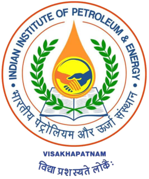
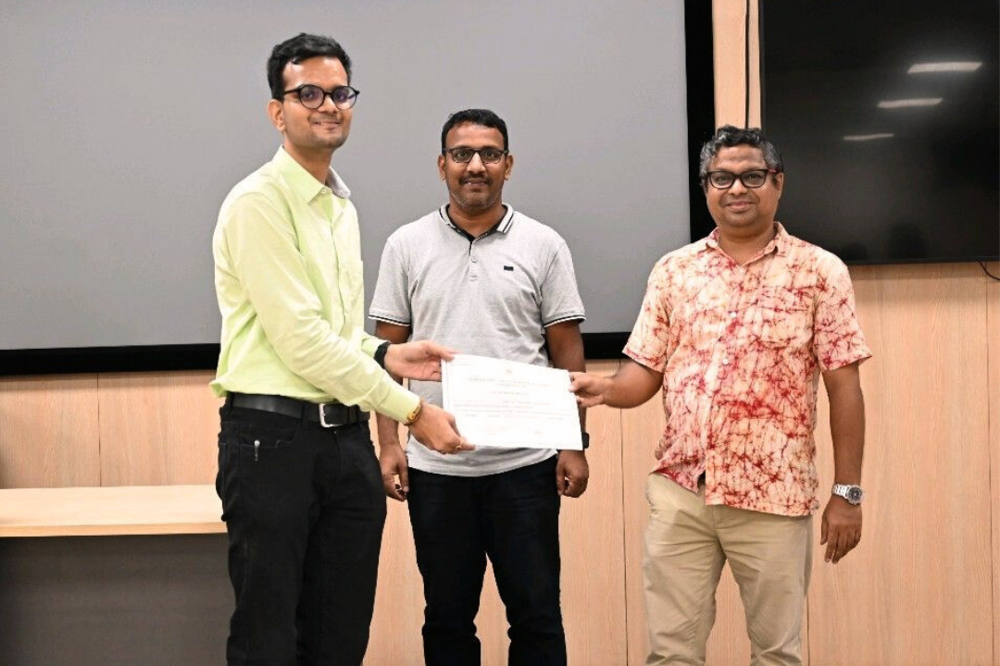
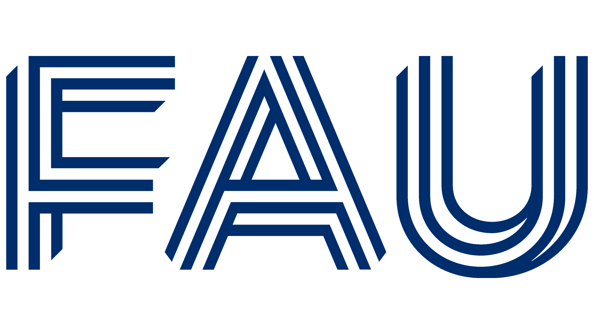

My Journey
2019–23

Bachelor's at IIPE
After securing 14687 AIR, admitted to Chemical Engineering at IIPE.
Graduated with CGPA: 9.12/10 (German equivalent: 1.5)
After securing 14687 AIR, admitted to Chemical Engineering at IIPE.
Graduated with CGPA: 9.12/10 (German equivalent: 1.5)
2022

Internship at IIPE
8-week summer research under Dr. Somnath Ghosh & Dr. Sourav Laha.
Used Gaussian 16 to predict hydrogenation mechanism via FLP.
8-week summer research under Dr. Somnath Ghosh & Dr. Sourav Laha.
Used Gaussian 16 to predict hydrogenation mechanism via FLP.
2023–26

Master’s at FAU
Started ELite program in Advanced Materials and Processes (MAP) at Friedrich Alexander Universität Erlangen-Nürnberg.
Started ELite program in Advanced Materials and Processes (MAP) at Friedrich Alexander Universität Erlangen-Nürnberg.
2025
Internship at BASF
Interned in Quantum Chemistry – Inorganic Team at BASF, Ludwigshafen.
Interned in Quantum Chemistry – Inorganic Team at BASF, Ludwigshafen.